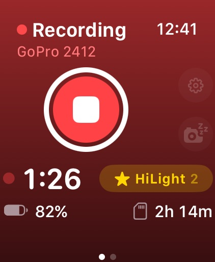
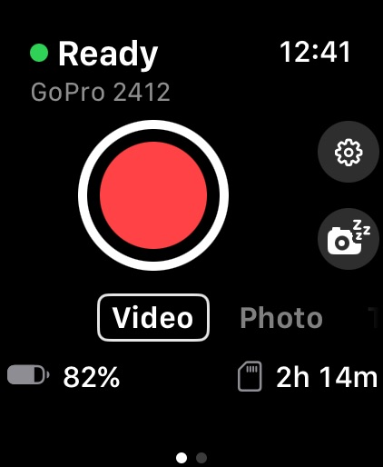
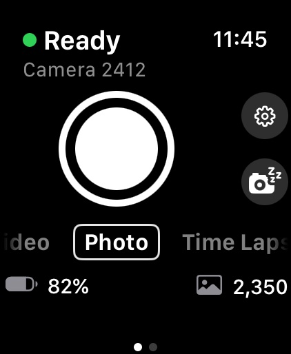
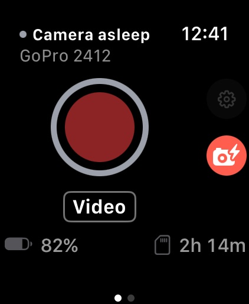

Start and stop your action camera from your wrist. One tap wakes it and records, a haptic confirms. Presets, HiLights and battery at a glance. No iPhone app required.




GoWrist is a remote control for GoPro cameras that runs entirely on your Apple Watch. Start and stop recording from your wrist while the camera sits on your helmet, handlebar or chest mount, without taking out your iPhone.
ONE TAP TO RECORD
Tap the big shutter button or use Double Tap. GoWrist wakes the camera, connects over Bluetooth and starts recording. The watch only plays a haptic once the camera has confirmed the command, so you know it is really recording. The screen turns red while the camera records and shows the running time.
EVERYTHING AT A GLANCE
Switch between Video, Photo and Time Lapse with the Digital Crown
Choose a preset for the current mode from the list behind the gear button
Mark highlights while recording with HiLight
Camera battery, remaining video time or photos, SD card status
Put the camera to sleep with the sleep button to save its battery. The same button wakes it again without recording, or tap record to start filming right away
ALWAYS WITHIN REACH
Complication with the last known status on your watch face
"Toggle Recording" control for Control Center and the Smart Stack, and for the Action Button on Apple Watch Ultra
Pair several cameras and switch between them
SUPPORTED CAMERAS
GoPro HERO9 Black, HERO10 Black, HERO11 Black, HERO11 Black Mini, HERO12 Black, HERO13 Black and MAX 2 with current firmware. GoWrist uses GoPro's public Open GoPro Bluetooth interface. You pair the camera once, in its pairing mode.
GOOD TO KNOW
Live preview and media transfer are not available. GoPro offers them only over Wi-Fi or USB, not over Bluetooth.
GoWrist never stops a running recording by itself. If the connection drops while recording, it shows that the camera may still be recording.
Requires watchOS 26 or later. No iPhone app needed.
PRIVACY
No account, no tracking, no ads, no analytics. Your data stays on your watch. Details in the privacy policy. Your paired cameras and settings stay on your watch.